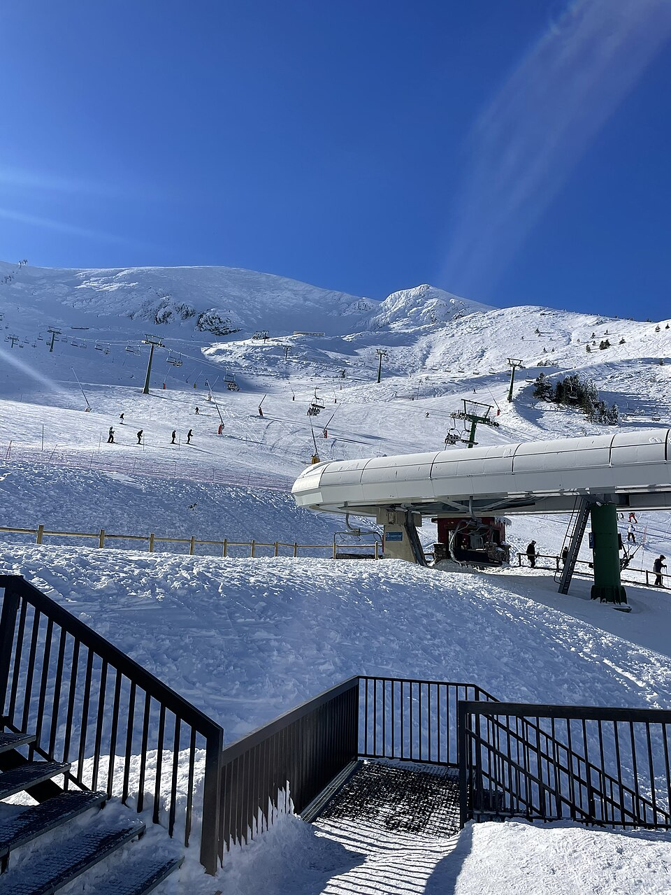

Valdezcaray
Sierra de la Demanda · La Rioja
- Pistas
- 16 km
- 32 trazados
- Cota máxima
- 2135 m
- mínima 1547 m
- Desnivel
- 588 m
- esquiable
- Remontes
- 10
- 7 telesillas · 3 telesquís
La estación de La Rioja, en la Sierra de la Demanda, a pocos kilómetros de Ezcaray y bajo el pico San Lorenzo.
Foto: Daniel563 · CC BY-SA 4.0 · Wikimedia Commons

Hoy
Valdezcaray ahora mismo
Estado de pistas y remontes según el último parte publicado, y las webcams de la estación.
Webcams
Estado y webcams de Infonieve.es, a partir de los partes y cámaras de cada estación. Antes de salir, confírmalo en la web oficial o en su parte de nieve.
Próximos 7 días
Nieve y tiempo previstos
Previsión para la cota alta (2135 m) y la base (1547 m).
Previsión de modelos meteorológicos de Open-Meteo (CC BY 4.0). Es previsión, no observación: lo que hay abierto hoy está en el estado de pistas.
Plano
Plano de pistas
Pasa el cursor o toca una pista o un remonte para ver su nombre, longitud y desnivel.
Trazados: © colaboradores de OpenStreetMap (ODbL), datos del 10 de agosto de 2026. No es el plano oficial de la estación ni refleja aperturas.
Pistas
32 pistas, 16 km
La más larga con nombre es Campos Blancos (1,7 km, azul).
VerdeMuy fácil
7 pistas · 2,7 km
Ver nombres
- EL Camino 1,3 km
- La Cascada 0,6 km
- Principiantes 0,2 km
- Sagarroya I 0,1 km
- Sagarroya II 0,1 km
- La Cascada 0 km
AzulFácil
9 pistas · 5,3 km
Ver nombres
- Campos Blancos 1,7 km
- Colocobia 0,8 km
- La Balsa 0,8 km
- Campos Blancos 0,5 km
- Los Tubos 0,5 km
- Esquí 0,2 km
- Los Tubos 0,2 km
RojaIntermedia
13 pistas · 6,3 km
Ver nombres
- Dos Torrentes 0,9 km
- La Solana 0,8 km
- Ormazal 0,8 km
- Pala Lisa 0,7 km
- La Diagonal 0,6 km
- El Collado 0,5 km
- Cangrejo 0,5 km
- Rehoyo 0,4 km
- La Vaguada 0,4 km
- Rehoyo 0,3 km
- Las Rocas 0,2 km
NegraDifícil
3 pistas · 1,8 km
Ver nombres
- La Ese 0,9 km
- Las Hayas 0,5 km
- Pala Fuerte 0,4 km
Remontes
10 remontes
El de mayor desnivel: TSD Campos Blancos, 318 m.
| Remonte | Tipo | Longitud | Desnivel | Llegada |
|---|---|---|---|---|
| TSD Campos Blancos | Telesilla | 660 m | 318 m | 2135 m |
| TSF Corrales | Telesilla | 502 m | 194 m | 1833 m |
| TSD Rehoyo | Telesilla | 590 m | 192 m | 1830 m |
| TSD Colocobia | Telesilla | 777 m | 142 m | 1966 m |
| TSD La Cascada | Telesilla | 326 m | 92 m | 1640 m |
| TSF Valdezcaray | Telesilla | 244 m | 88 m | 1636 m |
| TSF Salegares | Telesilla | 273 m | 63 m | 1702 m |
| TQ Principiantes | Telesquí | 196 m | 8 m | 1648 m |
| TQ Sagarroya II | Telesquí | 92 m | 6 m | 1637 m |
| TQ Sagarroya I | Telesquí | 28 m | 1 m | 1631 m |
Longitud en planta y desnivel sobre el modelo de relieve. No incluye horarios ni estado de apertura.
Guía práctica
Antes de ir a Valdezcaray
Cómo llegar
Sierra de la Demanda, La Rioja. Coordenadas del dominio: 42,2521, -2,9694.
Ver en OpenStreetMap · Cómo llegar en coche
En invierno comprueba el estado de la carretera y si hacen falta cadenas.
El terreno
- Monte San Lorenzo, 2271 m
- La Cuña, 2008 m
- Colocobia, 1972 m
- Colocobia, 1966 m
Enlaces oficiales
Forfaits, horarios y aperturas cambian durante la temporada: los publica la estación.
Alquiler, clases y servicios
- Alquiler: Alquiler de equipos Valdezcaray
- Clases: EPDI · clase particular de esquí o snowboard
- Restauración: Cafetería–Restaurante cota 1620
- Cafetería: Bar–Quiosco cota 1530
- Cafetería: Bar–Quiosco cota 1800
- Servicios: Consigna y taller de Valdezcaray
Datos comprobados en fuentes oficiales el 6 de noviembre de 2026. Confirma precios, tallas y disponibilidad con cada proveedor.
Valdezcaray sin cobertura
La app para Android guarda los mapas en el móvil y te ayuda a encontrarte con tu grupo.